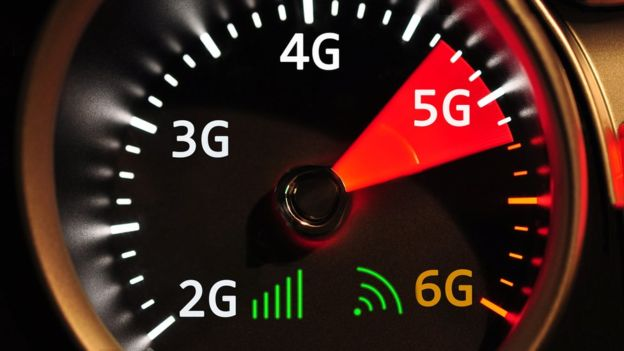
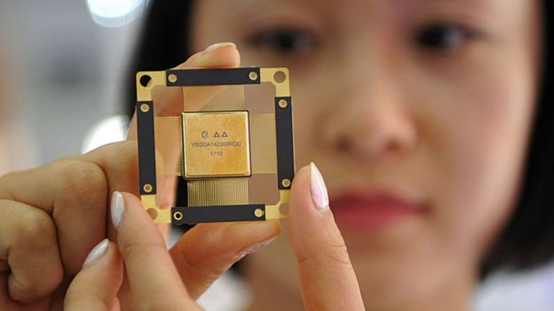

Superfast "fifth generation 5G" mobile internet could be launched as early as next year in some countries, promising download speeds 10 to 20 times faster than we have now. But what difference will it really make to our lives? Will we need new phones? And will it solve the "notspot" issue for people in remote areas?
It's the next - fifth-generation of mobile internet connectivity promising much faster data download and upload speeds, wider coverage and more stable connections.
It's all about making better use of the radio spectrum and enabling far more devices to access the mobile internet at the same time.
"Whatever we do now with our smartphones we'll be able to do faster and better," says Ian Fogg from OpenSignal, a mobile data analytics company.
"Think of smart glasses featuring augmented reality, mobile virtual reality, much higher quality video, the internet of things making cities smarter.
"But what's really exciting is all the new services that will be built that we can't foresee."
Imagine swarms of drones co-operating to carry out search and rescue missions, fire assessments and traffic monitoring, all communicating wirelessly with each other and ground base stations over 5G networks.
Similarly, many think 5G will be crucial for autonomous vehicles to communicate with each other and read live map and traffic data.
More prosaically, mobile gamers should notice less delay - or latency - when pressing a button on a controller and seeing the effect on screen. Mobile videos should be near instantaneous and glitch-free. Video calls should become clearer and less jerky. Wearable fitness devices could monitor your health in real time, alerting doctors as soon as any emergency arises.
There are a number of new technologies likely to be applied - but standards haven't been hammered out yet for all 5G protocols. Higher-frequency bands - 3.5GHz (gigahertz) to 26GHz and beyond - have a lot of capacity but their shorter wavelengths mean their range is lower - they're more easily blocked by physical objects.
So we may see clusters of smaller phone masts closer to the ground transmitting so-called "millimetre waves" between much higher numbers of transmitters and receivers. This will enable higher density of usage. But it's expensive and telecoms companies are not wholly committed yet.
Yes, it's a brand new radio technology, but you might not notice vastly higher speeds at first because 5G is likely to be used by network operators initially as a way to boost capacity on existing 4G (LTE - Long-Term Evolution) networks, to ensure a more consistent service for customers. The speed you get will depend on which spectrum band the operator runs the 5G technology on and how much your carrier has invested in new masts and transmitters.
The fastest current 4G mobile networks offer about 45Mbps (megabits per second) on average, although the industry is still hopeful of achieving 1Gbps (gigabit per second = 1,000Mbps). Chipmaker Qualcomm reckons 5G could achieve browsing and download speeds about 10 to 20 times faster in real-world (as opposed to laboratory) conditions.

Imagine being able to download a high-definition film in a minute or so.
This is for 5G networks built alongside existing 4G LTE networks. Standalone 5G networks, on the other hand, operating within very high frequencies (30GHz say) could easily achieve gigbabit-plus browsing speeds as standard. But these aren't likely to come in until a few years later.
The world is going mobile and we're consuming more data every year, particularly as the popularity of video and music streaming increases. Existing spectrum bands are becoming congested, leading to breakdowns in service, particularly when lots of people in the same area are trying to access online mobile services at the same time. 5G is much better at handling thousands of devices simultaneously, from mobiles to equipment sensors, video cameras to smart street lights.
Most countries are unlikely to launch 5G services before 2020, but Qatar's Ooredoo says it has already launch a commercial service, while South Korea is aiming to launch next year, with its three largest network operators agreeing to kick off at the same time. China is also racing to launch services in 2019.
Meanwhile, regulators around the world have been busy auctioning off spectrum to telecoms companies, who've been experimenting with mobile phone makers on new services.
Yes, I'm afraid so. But when 4G was introduced in 2009/10, compatible smart phones came onto the market before the infrastructure had been rolled out fully, leading to some frustration amongst consumers who felt they were paying more in subscriptions for a patchy service.
This time, says Ian Fogg, phone makers are unlikely to make the same mistake, launching 5G handsets only when the new networks are ready, probably towards the end of 2019. These next generation phones will be able to switch seamlessly between 4G and 5G networks for a more stable service.
In a word, no. Telecoms companies have invested too much in fibre optic and copper wire fixed line broadband to give those up in a hurry. Domestic and office broadband services will be primarily fixed line for many years to come, although so-called fixed wireless access will be made available in tandem.
However good wireless connectivity becomes, many prefer the stability and certainty of physical wires.
Think of 5G mobile as a complementary service for when we're out and about, interacting with the world around us. It will also facilitate the much-heralded "internet of things".
Lack of signal and low data speeds in rural areas is a common complaint in the UK and many other countries. But 5G won't necessarily address this issue as it will operate on high-frequency bands - to start with at least - that have a lot of capacity but cover shorter distances. 5G will primarily be an urban service for densely populated areas.
Lower-frequency bands (600-800Mhz typically) are better over longer distances, so network operators will concentrate on improving their 4G LTE coverage in parallel with 5G roll-out.
But commercial reality means that for some people in very remote areas, connectivity will still be patchy at best without government subsidy making it worthwhile for network operators to go to these places.
BBC News. (2018). What is 5G and what will it mean for you?. [online] Available at: https://www.bbc.co.uk/news/business-44871448 [Accessed 27 Feb. 2019].